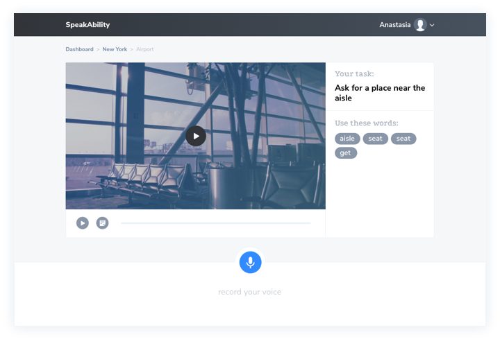
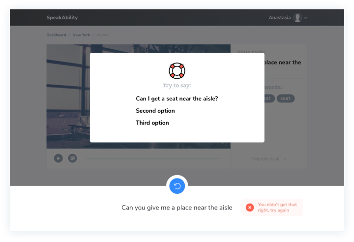

SpeakAbility Web app, landing page design and development, presentation design
MIT GSL program that I joined summer 2017, lasted for 8 weeks, during which with a team we were building an MVP for a SpeakAbility app. There were two business people, one developer and me, a designer, in our team.
That was a very fun and interesting experience. We did things like ideas brainstorm, market research, interviews, TAM calculating, creating a persona, CJM, paper prototyping, writing specifications, defining value proposition and a core of our product and many other things.
The result of this journey was a working prototype (hosted on heroku) and the second place on a Demo Day. We used open google API for speech recognition, so it is for a limited use (works only in Chrome, for example).
SpeakAbility is an app for training your speaking skills. We came up with the idea of creating real-life conversations by placing a user in different situations. You can try the UI by checking out the Invision prototype.  Conversation UI  If a student struggles with the answer we are giving him or her some hints
Pitch Deck
We did a lot of pitches during these 8 weeks and I was designing the presentations for them. The final version you can find here.
Web development
Also to help our developer focus on more serious things (like implementing speech recognition), I did all of the pages' markup that can be found on github. Landing page